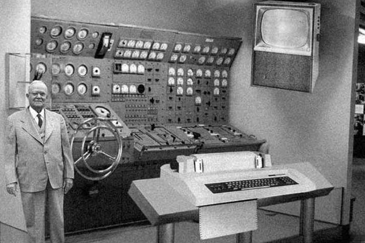
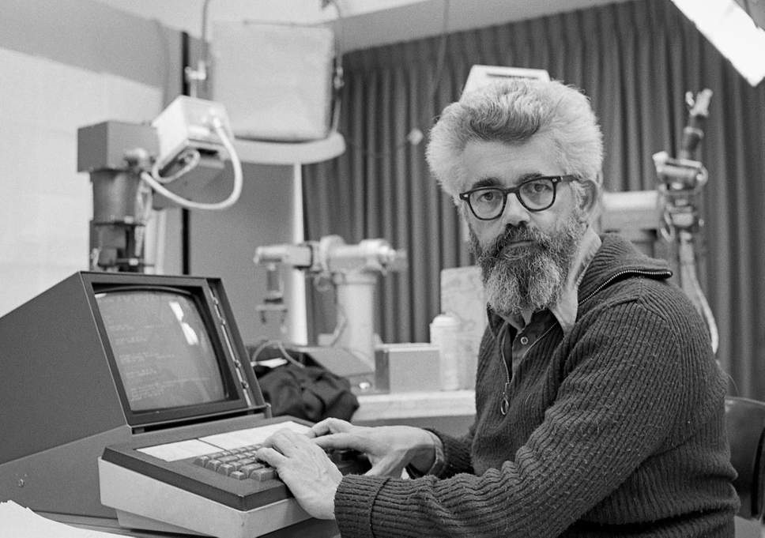

Resumo da História da Programação
A história da programação é uma jornada fascinante que acompanha o desenvolvimento da tecnologia da computação e da própria humanidade. Aqui estão os principais marcos dessa história
Antes dos Computadores:
Os primeiros "programadores" eram matemáticos e cientistas que desenvolviam algoritmos manualmente para resolver problemas matemáticos. Charles Babbage, no século XIX, projetou a "Máquina Analítica," uma máquina mecânica programável, que é considerada o precursor dos computadores modernos.
Década de 1940:
O nascimento da programação de computadores ocorreu com máquinas como o ENIAC e o Colossus, usados durante a Segunda Guerra Mundial para cálculos complexos. Programadores usavam linguagem de máquina e cartões perfurados.
Décadas de 1950 e 1960:
Surgiram as primeiras linguagens de programação de alto nível, como Fortran e COBOL. A linguagem de montagem ainda era amplamente usada. Grace Hopper desenvolveu a primeira linguagem de programação compilada, o COBOL.
Década de 1970:
A linguagem C foi criada por Dennis Ritchie na Bell Labs, tornando-se uma das mais influentes da história. A programação estruturada ganhou popularidade.
Décadas de 1980 e 1990:
A explosão das linguagens de programação, incluindo C++, Java e Python, ocorreu. A Internet trouxe a criação da World Wide Web, impulsionando a demanda por desenvolvedores web.
Início dos Anos 2000 em Diante:
A programação ganhou destaque global com o surgimento de empresas de tecnologia como Google, Facebook e Apple. Linguagens como JavaScript e Ruby on Rails impulsionaram o desenvolvimento web. A computação em nuvem e a inteligência artificial também se tornaram áreas importantes da programação.
Desenvolvimentos Recentes:
A programação móvel se tornou crucial com a popularização de smartphones. Linguagens modernas como Swift (para iOS) e Kotlin (para Android) ganharam destaque. Além disso, a programação de aplicativos web e a automação de tarefas com Python tornaram-se tendências importantes.
O Futuro da Programação:
A programação continua a evoluir, com o crescimento da computação quântica, realidade virtual/aumentada e a expansão da IA. A acessibilidade à programação também está se tornando mais difundida, permitindo que pessoas de diferentes origens aprendam a programar.
A história da programação é uma narrativa contínua de inovação e avanço tecnológico, impulsionada por mentes criativas e pela necessidade de resolver problemas complexos em nossa sociedade cada vez mais digital. À medida que a tecnologia continua a avançar, a programação desempenha um papel fundamental em moldar o futuro.
Resumo da História da Inteligência Artificial
A história da Inteligência Artificial remonta a antigas lendas e mitos sobre máquinas com características humanas. No entanto, o campo da IA como o conhecemos hoje começou a se desenvolver no século 20:
Décadas de 1940 e 1950:
Os primeiros passos na IA foram dados durante a Segunda Guerra Mundial, quando cientistas trabalhavam em computadores para resolver problemas complexos. Em 1950, Alan Turing propôs o "Teste de Turing" como um meio de determinar a inteligência de uma máquina.
Décadas de 1950 e 1960:
O termo "Inteligência Artificial" foi cunhado e o otimismo em relação à criação de máquinas inteligentes estava em alta. O programa de xadrez chamado "Turbochamp" foi desenvolvido neste período, mas o progresso geral foi mais lento do que o esperado.
Décadas de 1970 e 1980:
A IA passou por um período conhecido como "Inverno da IA", onde o financiamento e o interesse diminuíram devido ao desapontamento com os resultados. As abordagens simbólicas (baseadas em regras) dominaram este período.
Décadas de 1990 e 2000:
Com o aumento da capacidade de computação e o desenvolvimento de algoritmos de aprendizado de máquina, a IA ressurgiu. O XADREZ IBM Deep Blue derrotou o campeão mundial Garry Kasparov em 1997, demonstrando o poder do hardware e do software para tarefas específicas.
Década de 2010 em diante::
A IA entrou em uma era de rápido progresso. Algoritmos de aprendizado profundo, conhecidos como redes neurais profundas, se destacaram em tarefas como reconhecimento de imagem e processamento de linguagem natural. Grandes avanços em IA foram feitos por empresas como Google, Microsoft, Facebook e outras.
IA na Vida Cotidiana:
A IA agora desempenha um papel fundamental em nossas vidas, com assistentes virtuais, carros autônomos, recomendações de conteúdo online, diagnósticos médicos e muito mais.
Desafios e Questões Éticas:
A rápida evolução da IA também trouxe desafios, como questões de privacidade, viés algorítmico, desigualdade e a ética da automação em várias indústrias.
A história da IA é uma jornada fascinante de tentativa e erro, avanços e retrocessos, mas hoje a IA é uma parte integrante da tecnologia moderna e continua a se expandir em várias áreas, moldando nosso mundo de maneiras cada vez mais significativas.
A IA está revolucionando a programação, automatizando tarefas, impulsionando a análise de dados, criando chatbots e assistentes virtuais, e desempenhando um papel vital em setores específicos. Programadores que dominam a IA estão na vanguarda da inovação, enfrentando desafios éticos e moldando o futuro da tecnologia.